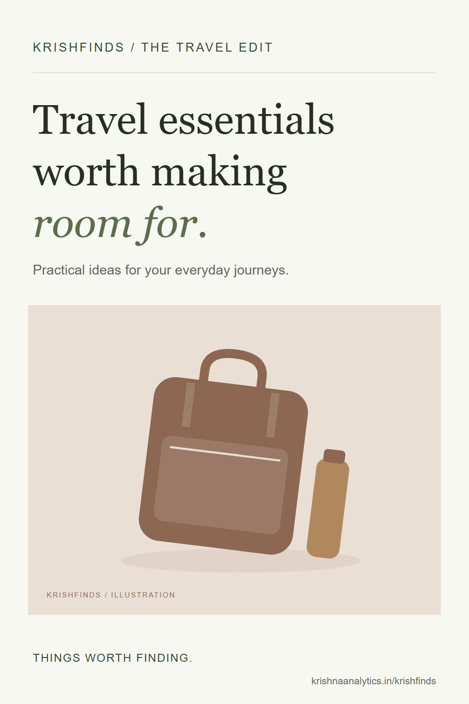

Useful travel gear should solve a problem you actually encounter. A bottle, an organised charging kit and a small extra bag may be enough. This is an editorial shortlist of generic product types, not a claim of personal testing of particular models.
Some links on KrishFinds are affiliate links. I may earn a commission if you purchase through them at no additional cost to you. As an Amazon Associate I earn from qualifying purchases. Read the disclosure.
These are generic product ideas, with illustrative placeholders. No specific model has been tested or rated here. Check current specifications and availability before buying.
Reusable Water Bottle

A refillable bottle that fits your day bag. Think about whether it solves a recurring problem for you before adding it to your bag or workspace.
- Why it’s useful
- Easy access to water is helpful on walks and travel days.
- Best for
- Walking and train journeys.
- Considerations
- Check lid seals and washability; empty it before airport security.
Compact Travel Organizer

Give cables and small essentials a place. Think about whether it solves a recurring problem for you before adding it to your bag or workspace.
- Why it’s useful
- Separate compartments help prevent a hunt through the bottom of your bag.
- Best for
- Short trips with a few accessories.
- Considerations
- Measure the pouch against your bag; too many compartments add bulk.
USB-C Fast Charger

One compact charging point for everyday devices. Think about whether it solves a recurring problem for you before adding it to your bag or workspace.
- Why it’s useful
- A compatible multi-port charger can reduce the adapters you carry.
- Best for
- Phones, tablets and compatible laptops.
- Considerations
- Check USB Power Delivery support and power sharing before choosing.
Foldable Tote

An extra bag that packs down small. Think about whether it solves a recurring problem for you before adding it to your bag or workspace.
- Why it’s useful
- Useful for groceries, laundry or a layer you no longer need to wear.
- Best for
- Day trips and unexpected extras.
- Considerations
- Check handle stitching and carry limits.
Final thoughts
Lay everything out before you pack. Keep the pieces you will use, check your route and the weather, and leave the just-in-case extras at home. A useful find should make your day simpler.

A useful idea to come back to.
Keep this guide for your next trip.
Download the Pinterest cover ↓


{kind=link}